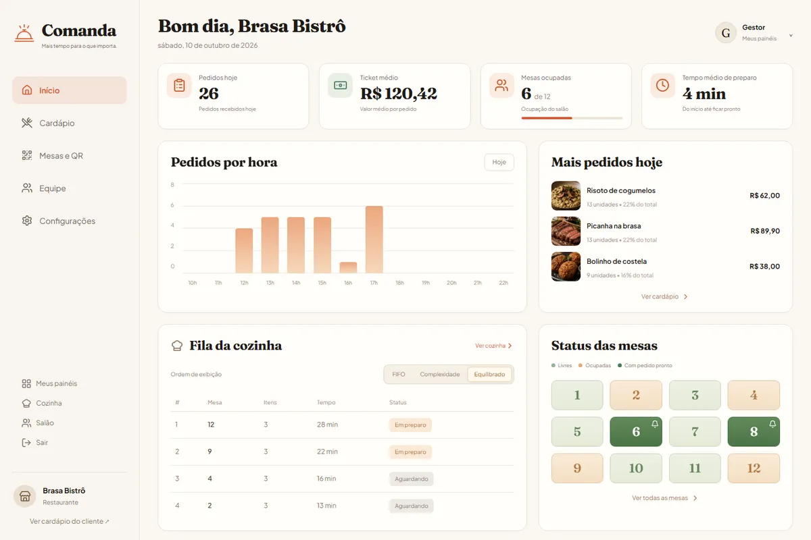
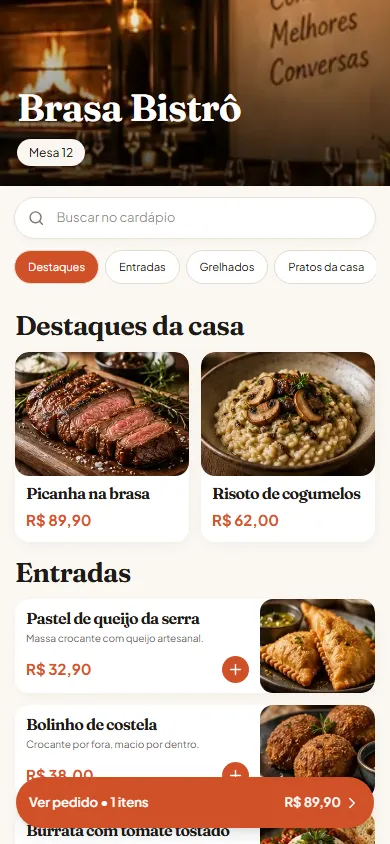

Alguém pede um orçamento
Fica sem resposta até de manhã. A pessoa já falou com o concorrente.
Recebe resposta na hora e sai da conversa com a reunião marcada.
Responde em segundos, marca reuniões e acompanha cada contacto até fechar. A sua equipa fica só com quem já quer comprar.
Experimente: responda como um cliente.
Demonstração guiada. O agente real é treinado com os dados da sua empresa.
Fica sem resposta até de manhã. A pessoa já falou com o concorrente.
Recebe resposta na hora e sai da conversa com a reunião marcada.
Alguém pára o que está a fazer para escrever a mesma resposta.
O funcionário digital responde. A equipa só entra quando é preciso decidir.
Ninguém volta a falar com o cliente e a venda arrefece.
O funcionário digital retoma a conversa e regista tudo.
Responde a cada contacto, descobre o que a pessoa procura e marca a reunião.
Negoceia por mensagem e retoma as propostas que ficaram paradas.
Resolve dúvidas, prazos e pedidos sem a sua equipa parar de trabalhar.
Todas as segundas diz o que subiu, o que desceu e o que fazer.
Precisa de outra função? Se tem um processo, criamos um funcionário digital para ela.
Todos os clientes e conversas num só lugar, sempre atualizados.
Faturas, relatórios e tarefas repetitivas passam a acontecer sozinhos.
Sites e landing pages rápidos, feitos para gerar contactos.
Identidade visual, conteúdo e gestão das suas redes sociais.
Trabalho real
Para restaurantes: o cliente lê o QR da mesa, faz o pedido no smartphone e a cozinha recebe-o na hora.
Capturas reais da demonstração, com dados fictícios.


Em 30 minutos, sem compromisso, vemos onde está a perder clientes ou tempo.
Ensinamos os seus produtos, preços e forma de falar. Só vai para o ar com a sua aprovação.
Ligamos ao seu WhatsApp e acompanhamos cada conversa nas primeiras semanas.
Depende do que precisa de resolver. Na primeira conversa sai um valor fechado, antes de qualquer contrato.
Definimos consigo o que pode responder. Quando não souber, passa a conversa a uma pessoa da sua equipa.
Sim. O agente apresenta-se como assistente virtual e o cliente pode pedir para falar com uma pessoa.
Não. Tratamos de tudo. Só precisamos de saber como o seu negócio funciona.
Em 30 minutos mostramos o que um funcionário digital pode fazer pelo seu negócio e quanto custa. Sem compromisso.
A J&K é uma parceria entre Patricia Jarruj e Kayky Almeida.